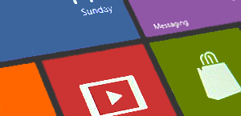
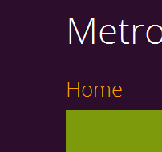

It seems your browser doesn't support Javascript. Please go to our Mobile Site to view our site. About This is a templating framework to make websites based on the Windows 8 Metro UI style. Live tile Many types of tiles Features Many tiles, slideshows, livetiles, many animations, works in all major browsers, SEO optimized, JS & CSS compressing system, Mobile version Click hereto view the typography of this template Typography Click here to go to the demo  Demo Download v3.0.0 - 15/09/2012 Lite & Full version  Version 2The old version Bugs Bugs Tutorials Add-ons Contact Terms of Use © Thomas Verelst HomeDownloadSupport